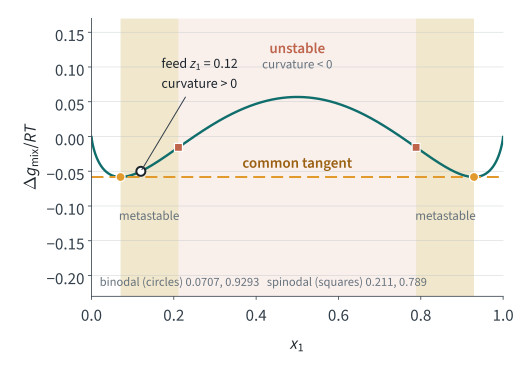
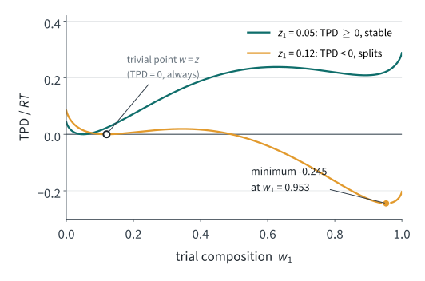
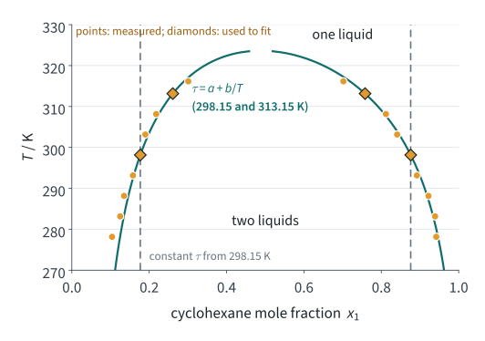
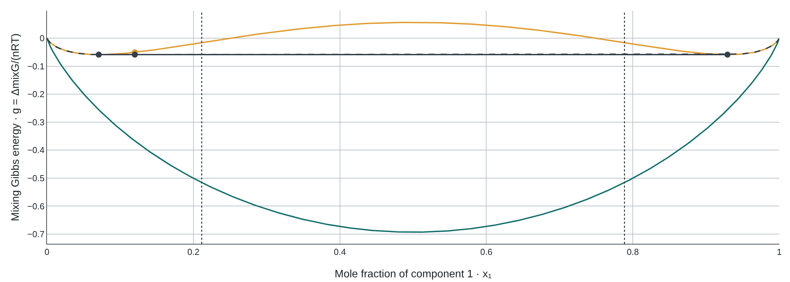

Session 3 of 7 · 180 minutes
Before the midterm Equations of state Fugacity and chemical potential Solution thermodynamics
After the midterm · 7 sessions 1 · VLE and flash 2 · Experimental VLE and consistency 3 · Liquid stability and LLE 4 · Solids and adsorption 5 · Chemical equilibrium 6 · Electrochemical equilibrium 7 · Choosing a model from evidence
Session 2 ended with a model that fits VLE data well and predicts a liquid split that does not exist. Today: how to test whether one liquid is stable, and how to fit a model to liquids that really do split.
2-Propanol + water · NRTL weighted fit from Session 2
τ₁₂ = 0.337, τ₂₁ = 2.848, α = 0.47
Predicts two liquids at x₁ = 0.088 and 0.237.
The real mixture is fully miscible. A flash with this model would report a decanter that cannot work.
Cyclohexane + methanol · measured
Two liquids measured from 278 to 316 K. At 298.15 K: x₁ = 0.177 and 0.876.
Nine tie lines from 278 to 316 K (Atik and Kerboub, 2008). Lab 05 uses them.
Both answers come from the same function, Δgmix(x). Today is about reading it correctly, and about what data decide it.
Data: Atik and Kerboub, J. Chem. Eng. Data 53 (2008) 1669–1671, via NIST ThermoML. 2-Propanol + water: Barbieri et al. (2024), Session 2.
Session 1 A flash that returns one phase is not finished when K depends on x. Test stability first.
Session 2 VLE near the dilute end hardly constrains τ₂₁, yet the phase behavior depends strongly on it.
Today Local and global stability, the tangent-plane test, and LLE data as the evidence that rules a split in or out.
Where you show it
0–30 Essential concepts Δgmix, stability, TPD, tie lines
30–40 Activity 1 stable or not?
40–60 Demo Lab 04
60–70 Break
70–140 Activity 2 · pair investigation Lab 05 fits and transfer, then your own code
140–180 Discussion and exit ticket what decides a split
Session question A liquid passes every local test. When does it still split, and what evidence settles whether a model’s split is real?
Before class · 15–20 min Read the note on Gibbs energy of mixing and phase stability. Answer its three questions.
After class · 30–40 min Finish Lab 05 A–E and submit the study file with your name and ID.
Studying on your own? Follow the same order. Turn on narration or captions at the bottom left, and pause at each activity slide.

\frac{\Delta g_{\text{mix}}}{RT}=\sum_i x_i\ln x_i+\frac{G^E}{RT}
Lowest G wins At fixed T and P, a feed splits if a straight line between two compositions lies below the curve at the feed.
Margules, A = 3 GE/RT = A x₁x₂. Binodal 0.0707 and 0.9293; spinodal 0.211 and 0.789.
The feed z₁ = 0.12 sits where the curve is still convex, yet below the tangent line it is not the lowest state.
Local: stable against small changes when
x_1x_2\,\frac{\partial^2(\Delta g_{\text{mix}}/RT)}{\partial x_1^2}=1+x_1x_2\frac{\partial^2 g}{\partial x_1^2}>0
Zero on the spinodal. For Margules: 1 − 2A x₁x₂.
Global: the two liquids of the binodal have equal chemical potentials:
x_i^{\alpha}\gamma_i^{\alpha}=x_i^{\beta}\gamma_i^{\beta}\qquad i=1,2
Three regions for a feed
| Feed position | Curvature | State |
|---|---|---|
| outside the binodal | > 0 | stable |
| binodal to spinodal | > 0 | metastable |
| inside the spinodal | < 0 | unstable |
A curvature test alone calls a metastable feed stable. Only a global test finds that it splits.

\frac{\text{TPD}(\mathbf w)}{RT}=\sum_i w_i\big[\ln w_i\gamma_i(\mathbf w)-\ln z_i\gamma_i(\mathbf z)\big]
Rule TPD ≥ 0 for every trial w: stable. Any w with TPD < 0: the feed splits, and w is a good first guess for the new phase (Michelsen, 1982).
Trap w = z always gives TPD = 0. A local search started at the feed stops there. Search the whole composition range, or from several starts.
Wilson: the curvature stays positive for any parameters, so it cannot describe LLE.
NRTL, UNIQUAC: can. That flexibility cuts both ways: a fit to VLE alone can produce a split that does not exist.
Use LLE or mutual-solubility data when they exist. They are the direct evidence.
2-Propanol + water · NRTL, α = 0.47 · Session 2 fits at 60 kPa
| Fit | τ₁₂ | τ₂₁ | min. curvature | prediction |
|---|---|---|---|---|
| unweighted | 0.362 | 1.752 | 0.238 | one liquid |
| weighted | 0.337 | 2.848 | −0.030 | split, 0.088 / 0.237 |
The two fits differ mainly in τ₂₁, which dilute VLE rows hardly constrain. A single cloud-point measurement near x₁ = 0.15 would decide between them.
Activity 1 · 10 minutes · alone, then with a partner
Margules, A = 3: binodal x₁ = 0.0707 and 0.9293. For z₁ = 0.05, 0.12 and 0.50, calculate the scaled curvature 1 − 2A z₁z₂ and classify each feed.
Then: which feed does a curvature test alone get wrong? For each feed that splits, find the fraction of the x₁-rich liquid with the lever rule.
On your own: pause here, write your answer, then go to the next slide.
Margules A = 3 · binodal 0.0707 / 0.9293
| z₁ | curvature | min. TPD/RT (at w₁) | state | x₁-rich fraction |
|---|---|---|---|---|
| 0.05 | 0.715 | 0 (trivial) | stable | — |
| 0.12 | 0.366 | −0.245 (0.953) | metastable | 0.057 |
| 0.50 | −0.500 | −0.115 (0.071) | unstable | 0.500 |
z₁ = 0.12 passes the curvature test and still splits. The lever rule gives (0.12 − 0.0707)/(0.9293 − 0.0707) = 0.057.
The Gibbs energy gained by splitting is small, 0.0082 RT per mole of feed. A metastable liquid can persist in practice until a second phase nucleates, but the equilibrium state has two liquids.
Each measured tie line gives two equations, xiαγiα = xiβγiβ. With α fixed, two τ are determined exactly.
So a perfect fit to one tie line is not evidence that the model is right. It only shows that the equations had a solution.
At 298.15 K with α = 0.3: ln γ₁ = 1.651 and 0.052, x₁γ₁ = 0.9225 in both liquids; x₂γ₂ = 0.8914 in both.
Cyclohexane + methanol · 298.15 K · tie line 0.177 / 0.876
| α | τ₁₂ | τ₂₁ | reproduces the tie line? |
|---|---|---|---|
| 0.2 | 1.785 | 1.133 | exactly |
| 0.3 | 1.851 | 1.433 | exactly |
| 0.47 | 2.649 | 2.341 | no: best fit splits at 0.746 / 0.873 |
One tie line cannot identify α. Some α cannot reproduce it at all.

Held-out tie lines · α = 0.3 · composition RMSE
| τ(T) from | RMSE | within U |
|---|---|---|
| 298.15 K, constant | 0.077 | 0 of 8 |
| 298.15 K, τ ∝ 1/T | 0.056 | 1 of 8 |
| 298.15 and 313.15 K, a + b/T | 0.0097 | 4 of 7 |
The a + b/T model closes the gap near 324 K, above the last measured tie line at 316.15 K. That is an extrapolation, not a measured UCST.
Two liquids and a vapor, binary:
F=C-\pi+2=2-3+2=1
At a chosen P, the three-phase T and all three compositions are fixed. Every feed between the two liquids gives the same three compositions.
The amounts are not fixed by P and z alone: two mass balances, three unknown amounts. One more specification is needed, such as heat duty or vapor fraction.
Above or below the three-phase T at that P, only two phases remain.
Lab 06 works through this: the pressure sweep across P₃, the missing specification, and when the vapor composition lies inside the liquid gap (a heterogeneous azeotrope).
Optional after class: Lab 06 A and B.

Lab 04 should report · A = 3, z₁ = 0.12 Two liquids · x₁ = 0.0707 / 0.9293 · β fraction 0.0574 · metastable · TPD −0.2446 · gain 0.0082. NRTL weighted fit: split 0.088 / 0.237.
Calling a feed stable from its curvature. A metastable feed has positive curvature and still splits.
Accepting the trivial solution. xα = xβ satisfies the isoactivity equations for any composition.
Searching TPD from the feed only. w = z gives TPD = 0. The negative minimum may be on the other side of the diagram.
Treating an exact tie-line fit as validation. Two equations, two unknowns. Check on tie lines the fit did not use.
You decide
The assistant may
Write and debug code that does exactly what your specification says. Not parameter values or conclusions.
Lab 05 step E recomputes from the measured tie line and from your τ:
Hand in the specification, the prompt, the final code and what you fixed.
Next Activity 2: a pair investigation in Lab 05, 70 minutes.
Before you leave your seat, check that Lab 05 opens on your device.
Activity 2 · 70 minutes · in pairs: one drives Lab 05, one checks by hand, then swap
15 min · by hand At 298.15 K, α = 0.3, τ = 1.851 / 1.433: calculate ln γ₁ and ln γ₂ in both liquids, and show xiγi is equal.
25 min · fits and transfer Fit 298.15 and 313.15 K; save each. In A, transfer constant τ and a + b/T to the other tie lines. In B, compare α.
20 min · E your own code Write the specification. Use an AI assistant to write the code for (a)–(d), run it, and check it in E. Fix what disagrees.
10 min · explain Two sentences with numbers: why does a perfect fit at 298.15 K predict 313.15 K so poorly? Download the study file with names and IDs.
On your own: do both roles yourself. Pause the slides, work in Lab 05, then continue.
Graduate extension Use C to perturb the 298.15 K tie line within its uncertainty. How far do τ₁₂ and τ₂₁ move, and does the predicted gap at 313.15 K stay within U?
Check your results · α = 0.3
| 298.15 K | 313.15 K | |
|---|---|---|
| τ₁₂ | 1.851 | 1.474 |
| τ₂₁ | 1.433 | 1.370 |
| spinodal x₁ | 0.315 / 0.764 | 0.361 / 0.662 |
| min. TPD at z₁ = 0.25 | −0.0596 at 0.900 | — |
Constant τ from 298.15 K predicts 0.177 / 0.876 at 313.15 K; measured 0.261 / 0.758. With a + b/T from both, the held-out RMSE is 0.0097.
298.15 K, α = 0.3 · a first-draft script: solvers started at generic guesses
| Lab | Script | |
|---|---|---|
| τ₁₂, τ₂₁ | 1.851, 1.433 | 1.851, 1.433 |
| binodal x₁ | 0.177 / 0.876 | 0.519 / 0.519 |
| min. TPD at z₁ = 0.25 | −0.0596 at 0.900 | 0 at 0.250 |
The τ were right. The binodal solver, started at 0.4 / 0.6, returned the trivial solution. The TPD search, started at the feed, stopped at w = z.
Fixes that made all checks agree
Swapped τ₁₂ and τ₂₁ also fails: the isoactivity residual is 0.12, and E names the swap.
All checks agree only shows that the code solves your problem. Constant τ still fails at other temperatures.
Discuss in pairs, then with the class
Stability Curvature is a local test. A feed splits whenever some trial composition gives TPD < 0; search the whole range.
Tie lines One tie line fixes two parameters exactly. That is calibration, not validation.
Evidence Check τ(T) on tie lines the fit did not use. Mutual-solubility data decide whether a predicted split is real.
Session question: z₁ = 0.12 at A = 3 passes the curvature test and still splits (TPD −0.245). A model fitted exactly at 298.15 K misses the other tie lines by 0.077 (RMS composition) with constant τ, and by 0.0097 with a + b/T calibrated at two temperatures.
Next session When does a solid appear, and where does a gas go on a surface? Solids and adsorption (Labs 10 and 11).
Exit ticket and feedback · alone · 5 minutes · anonymous
A liquid feed has positive curvature of Δgmix. Is that enough to call it stable? Which test would you run, and what result would show that it splits?
Scan the code or open the link. The same form asks three short questions about today: pace, confidence and whether the lab worked.
No name or student ID is recorded. Wait for “Response received.”
Hand in · this week Your Lab 05 study file with the two fits, A, B, D and E, name and student ID.
Prepare · Session 4 Read the Session 4 pre-class note when it is posted. About 20 minutes.
Optional · graduate Lab 06 A and B: supply the missing specification for a three-phase state, and sweep P across P₃.